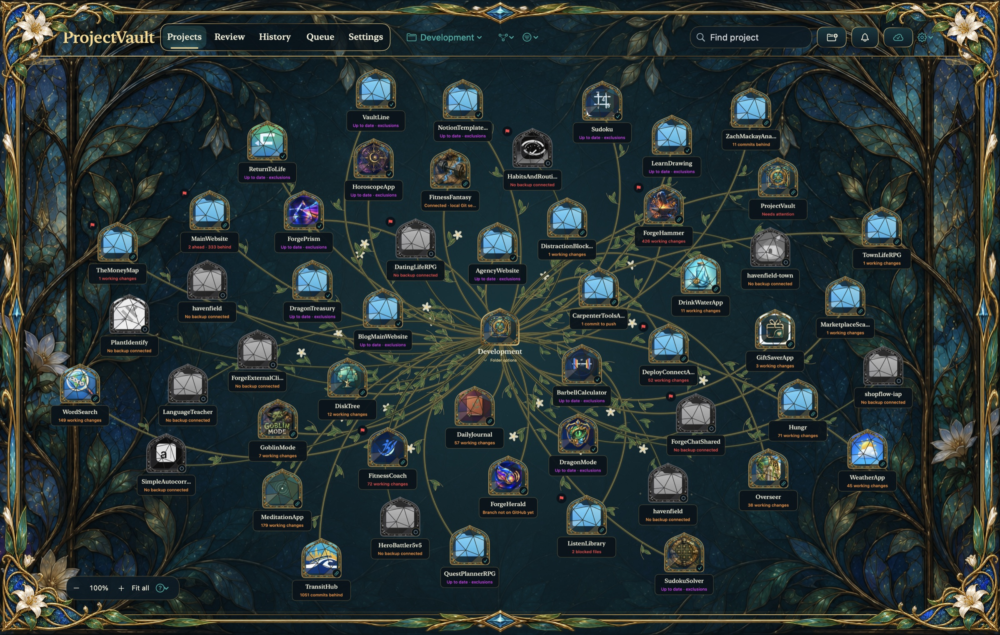
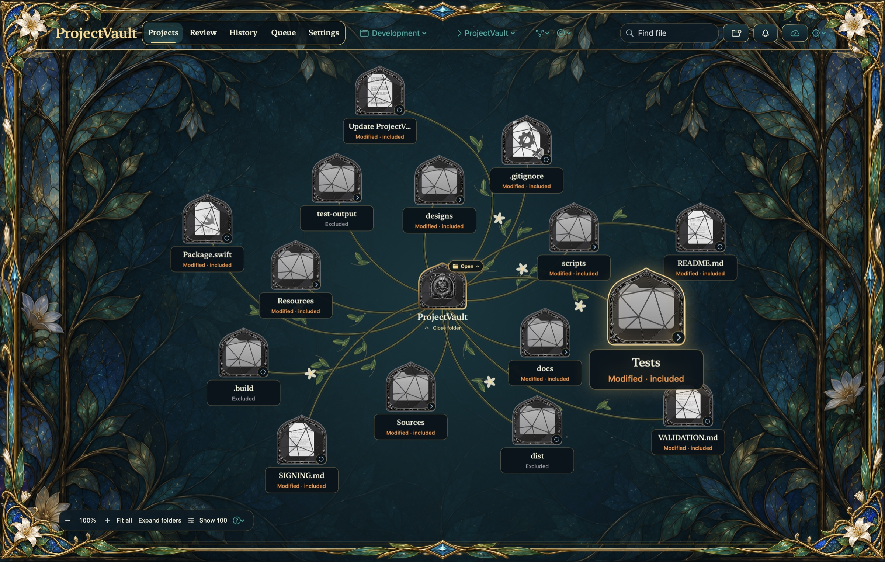

Find your place.
Connect the folders where your work already lives. Move through projects and files, expand a branch, or search for exactly what you need.
ProjectVault for macOS
A living skill tree for everything you’re building. Explore your folders, open your tools and keep your work backed up — all from one native Mac app.
Meet your next workspacemacOS 14+ In development


Captured from the current source build · ProjectVault 1.19.2 (36) · 15 October 2026
Connect the folders where your work already lives. Move through projects and files, expand a branch, or search for exactly what you need.
Open a website, start a development server or launch a Swift build. Review changes and history without losing track of the project.
Set independent GitHub and ZIP schedules. Follow scans and backups in the work queue, with results that show what needs attention.
Two ways to keep your work
GitHub snapshots
Back up included files to your approved branch, or use a separate branch for scheduled snapshots. ProjectVault verifies the expected commit on GitHub.
How GitHub backups workZIP snapshots
Save a dated snapshot of a project or an entire connected folder to a destination you choose. ZIPs run independently of GitHub and include ignored files.
How ZIP snapshots workGitHub backups follow exclusions and file checks. ZIPs include sensitive files and aren’t encrypted. Read about data & privacy ↗
Still growing · In development
ProjectVault is taking shape. Get in touch for availability, feedback or a closer look.
Ask about ProjectVaultThere isn’t a public download yet. ProjectVault is in development for macOS 14 and later. Email Zach for availability.
No. You can explore your projects and use ZIP snapshots independently. GitHub backups need a GitHub account and Git installed through Apple’s Command Line Tools.
The getting-started guide covers connecting folders, schedules, file review, recovery and troubleshooting.